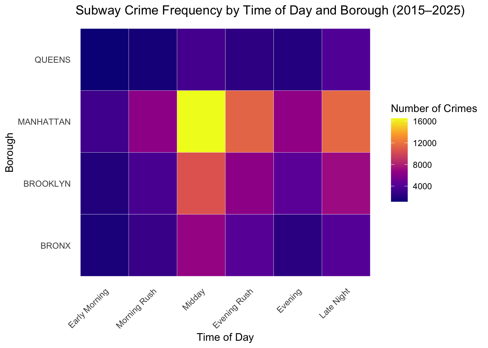
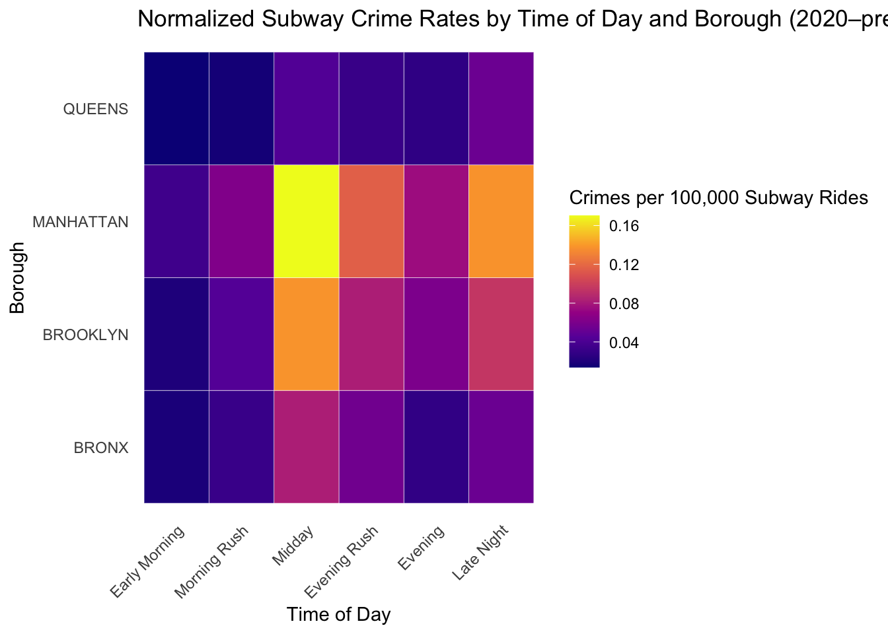

Time-of-Day and Borough Patterns in NYC Subway Crime
STA 9750 – Final Individual Project Report
Author
Nupur Nagarkatti
Published
December 1, 2025
1. Introduction
Public concern about safety in the New York City subway system has intensified in recent years, particularly following the COVID-19 pandemic and the subsequent shifts in ridership, travel behavior, and policing strategies. While aggregate counts of reported subway crimes are frequently cited in public discourse, these totals often obscure important temporal and spatial variation within the system.
Understanding when crimes occur, and where within the city they are concentrated, is critical for interpreting crime trends accurately and for informing targeted policy interventions. Boroughs differ substantially in ridership composition, travel purpose, crowd density, and late-night activity, suggesting that crime risk may not be uniform across either geography or time of day.
This report addresses the following specific question (SQ):
Are subway crimes linked to time of day and borough, after accounting for ridership volume?
This specific question supports the project’s overarching objective of evaluating spatial patterns of crime in the MTA system by introducing time of day as a key modifying factor. Rather than treating borough-level crime risk as homogeneous, this analysis examines how risk varies across distinct daily travel periods and whether those patterns differ systematically by borough. By incorporating both temporal structure and ridership normalization, this study aims to distinguish between periods of high crime volume and periods of elevated crime risk.
2. Data Sources and Acquisition
This analysis draws on publicly available administrative datasets that capture reported subway crime and systemwide ridership in New York City. Because the goal of this report is to produce a fully reproducible analysis, all data are acquired programmatically using public APIs rather than manual downloads.
This section describes the sources used, evaluates their suitability for the research question, and documents the procedures used to acquire and load the data into R.
2.1 NYPD Complaint Historic Data (2015–2025)
The primary source of crime information for this analysis is the NYPD Complaint Data – Historic dataset, provided through NYC Open Data. This dataset contains incident-level records for all reported crimes in New York City, including offense classification, date and time of occurrence, and location descriptors.
For the purposes of this project, the dataset serves as a proxy for subway crime activity. While the data reflect reported complaints rather than verified crimes, they are well-suited for examining relative temporal and spatial patterns within the transit system over time.
To ensure reproducibility and avoid unnecessary repeated downloads, the full archival dataset is retrieved programmatically and stored locally only if it does not already exist.
Show code
# STEP 1: Download and load NYPD Complaint Historic dataset (full archive)# Purpose: Pull the full NYPD complaint archive locally (only downloads once),# then load it into R with only the columns we need for this project.#| label: step-1-complaints-download#| message: false#| warning: falselibrary(tidyverse)library(lubridate)library(httr2)library(readr)library(hms)# Create data folder (safe to run multiple times)dir.create(file.path("data", "courseproject"),showWarnings =FALSE,recursive =TRUE)# NYPD Complaint Data – Historic (full archive)complaint_url <-"https://data.cityofnewyork.us/api/archival.csv?id=qgea-i56i&version=19534&method=export"output_path <-file.path("data", "courseproject", "nypd_complaint_historic.csv")# Download only if file does not already existif (!file.exists(output_path)) {request(complaint_url) |>req_progress() |>req_perform(path = output_path)}# Read into R (show_col_types = FALSE keeps the rendered report clean)complaint_df <-read_csv(output_path, show_col_types =FALSE)
2.2 Filtering to Subway-Related Complaints and Deduplication
The raw NYPD complaint dataset includes incidents across all crime locations and categories in New York City. To isolate subway crime activity relevant to this study, the dataset is filtered to retain only complaints occurring on NYC subway premises, as identified by the NYPD’s premise type classification.
The analysis window is restricted to the period from January 1, 2015 through December 31, 2025, providing a long-run view of subway crime patterns while allowing alignment with ridership data in later stages of the analysis.
Because a single incident may occasionally appear multiple times in the dataset, complaints are deduplicated using the unique complaint number. This ensures that each reported incident is counted once in subsequent aggregation steps.
Show code
# STEP 2: Filter NYPD complaint data to subway-related crimes (2015–2025)# Purpose: Keep only complaints that occurred in the NYC subway system,# deduplicate by complaint number, and restrict to the analysis window.#| label: step-2-filter-subway#| message: false#| warning: falsefiltered_complaints <- complaint_df |>filter(prem_typ_desc =="TRANSIT - NYC SUBWAY") |>mutate(date =as.Date(cmplnt_fr_dt)) |>filter(between(date, as.Date("2015-01-01"), as.Date("2025-12-31"))) |>distinct(cmplnt_num, .keep_all =TRUE)
2.3 Time-of-Day Feature Construction
To examine temporal patterns in subway crime, each complaint is assigned to a time-of-day category based on the reported time of occurrence. Complaint times are first parsed into a standardized time format, allowing robust handling of character-based and irregular time representations.
The hour of occurrence is then extracted and mapped to one of six analytically meaningful time bins: Early Morning, Morning Rush, Midday, Evening Rush, Evening, and Late Night. These categories are designed to reflect distinct travel behaviors and activity levels within the subway system and are commonly used in transit and criminology research.
This transformation produces a working subway dataset with a consistent temporal structure suitable for aggregation and comparison across boroughs.
Show code
# STEP 3: Create working subway dataset and bin crimes by time of day#| label: step-3-time-bins#| message: false#| warning: falsesubway_df <- filtered_complaints |>mutate(# robust time parsing (handles character + weird formats better)cmplnt_fr_tm = hms::as_hms(cmplnt_fr_tm),hour =hour(cmplnt_fr_tm),time_bin =case_when( hour >=7& hour <10~"Morning Rush", hour >=16& hour <19~"Evening Rush", hour >=10& hour <16~"Midday", hour >=19& hour <22~"Evening", hour >=22| hour <4~"Late Night", hour >=4& hour <7~"Early Morning",TRUE~NA_character_ ) )
3. Analytical Strategy
The objective of this analysis is to evaluate whether subway crime patterns vary systematically by time of day and borough, and whether those patterns persist after accounting for changes in ridership volume. To address this question, the analysis follows a staged strategy that separates crime volume from crime risk, allowing clearer interpretation of temporal and spatial variation.
3.1 Aggregation by Borough and Time of Day
The first stage of the analysis aggregates subway crime complaints by borough and time-of-day category. This aggregation provides a high-level descriptive view of when and where reported incidents are most concentrated within the subway system.
Because boroughs differ substantially in population density, transit usage, and travel purpose, raw complaint counts are expected to vary widely. Nevertheless, examining absolute counts is a necessary first step, as it reflects the observed distribution of reported incidents and establishes a baseline against which adjusted measures can be compared.
These aggregated counts are visualized using heatmaps, which allow simultaneous comparison across boroughs and time-of-day categories and make relative differences readily apparent.
3.2 Motivation for Ridership Normalization
Raw crime counts alone do not account for exposure. Periods with higher ridership naturally present more opportunities for reported incidents, even if the underlying per-rider risk is low. This issue is particularly salient when comparing pre- and post-pandemic periods, during which subway usage fluctuated dramatically.
To address this limitation, the second stage of the analysis normalizes crime counts using subway ridership data. By adjusting for the volume of riders, the analysis shifts focus from crime frequency to crime risk, enabling more meaningful comparisons across time periods and boroughs.
3.3 Normalization Approach
Due to the absence of borough-level or time-of-day ridership data, normalization is performed using systemwide daily subway ridership. Crime complaints occurring from 2020 onward are aggregated over the same period and divided by total subway rides during that window.
The resulting metric, crimes per 100,000 rides serves as a standardized measure of relative risk. While this approach assumes that the distribution of ridership across boroughs and times of day is broadly similar, it provides a defensible baseline for exposure adjustment given the available data.
This assumption is discussed further in the limitations section.
3.4 Comparative Interpretation
By examining raw and normalized results side by side, the analysis distinguishes between: cd ~/STA9750-2025-FALL pwd - periods with high crime volume driven by high usage, and
- periods with elevated crime risk relative to ridership.
Changes in borough rankings or time-of-day patterns after normalization are interpreted as evidence that exposure alone does not fully explain observed crime distributions. This comparative framework allows the analysis to isolate meaningful temporal and spatial patterns that directly address the specific research question.
4. Results
This section presents the results of the analysis in two stages. First, raw subway crime counts are examined to describe the distribution of reported incidents across boroughs and times of day. Second, these patterns are re-evaluated after normalizing by subway ridership to assess relative per-rider risk.
4.1 Raw Subway Crime Patterns by Borough and Time of Day
The first set of results summarizes the total number of reported subway crime complaints by borough and time-of-day category. These raw counts reflect absolute incident volume and provide a baseline view of when and where crimes are most frequently reported within the subway system.
Show code
# STEP 4: Summarize subway crime counts by borough and time of day# Display a compact, expandable table for inspection#| label: step-4-summarize#| message: false#| warning: falselibrary(DT)crime_by_boro_time <- subway_df |>filter(!is.na(time_bin), !is.na(boro_nm), boro_nm !="(null)") |>group_by(boro_nm, time_bin) |>summarise(total_crimes =n(), .groups ="drop") |>arrange(desc(total_crimes))datatable( crime_by_boro_time,colnames =c("Borough", "Time of Day", "Total Reported Crimes"),caption = htmltools::tags$caption(style ="caption-side: bottom; text-align: left;","Table 1: Total reported subway crime complaints by borough and time of day (2015–2025)." ),options =list(pageLength =6,lengthChange =FALSE,searching =FALSE,ordering =TRUE ))
4.1.1 Heatmap of Raw Subway Crime Counts
To visualize how reported subway crime volume varies jointly by borough and time of day, the aggregated complaint counts are displayed using a heatmap. This representation allows for rapid comparison across borough–time combinations and highlights periods of concentrated activity.
Show code
# STEP 5: Visualize subway crime frequency by borough and time of day# Purpose: Heatmap of raw (non-normalized) subway complaint counts across boroughs and time bins (2015–2025)#| label: step-5-heatmap-raw#| message: false#| warning: falselibrary(ggplot2)# Define consistent ordering for time bins and boroughstime_levels <-c("Early Morning","Morning Rush","Midday","Evening Rush","Evening","Late Night")crime_by_boro_time_plot <- crime_by_boro_time |>mutate(time_bin =factor(time_bin, levels = time_levels),boro_nm =factor(boro_nm, levels =c("BRONX", "BROOKLYN", "MANHATTAN", "QUEENS")) )# Create plotheatmap_raw <-ggplot( crime_by_boro_time_plot,aes(x = time_bin, y = boro_nm, fill = total_crimes)) +geom_tile(color ="white") +scale_fill_viridis_c(option ="plasma") +labs(title ="Subway Crime Frequency by Time of Day and Borough (2015–2025)",x ="Time of Day",y ="Borough",fill ="Number of Crimes" ) +theme_minimal() +theme(axis.text.x =element_text(angle =45, hjust =1),panel.grid =element_blank() )# Display plot in reportheatmap_raw

Show code
# Save plot to Desktop for PowerPointggsave(filename ="/Users/nupur/Desktop/heatmap_raw_time_borough.png",plot = heatmap_raw,width =8,height =5,dpi =300)
The raw heatmap reveals substantial variation in reported subway crime volume across both boroughs and times of day. Manhattan exhibits consistently high complaint counts across nearly all time categories, with particularly elevated levels during Midday and Evening Rush periods. This pattern is consistent with Manhattan’s role as the city’s primary employment, tourism, and transit hub.
Across boroughs, Midday periods tend to show higher raw complaint volumes than late-night hours, reflecting higher overall subway usage during daytime travel. In contrast, Late Night complaint counts are comparatively lower in Queens and the Bronx, suggesting reduced overall activity during overnight hours.
However, because these results reflect absolute counts rather than exposure-adjusted risk, they do not distinguish between periods of high crime incidence driven by heavy ridership and periods in which individual riders may face elevated relative risk. This limitation motivates the ridership-normalized analysis presented in the next section.
4.2 Ridership-Normalized Subway Crime Risk
Raw crime counts provide useful information about overall activity levels in the subway system, but they do not directly measure risk experienced by individual riders. Periods with high passenger volume naturally generate more opportunities for reported incidents, even if the likelihood of any single rider experiencing a crime is relatively low.
To address this limitation, this section normalizes subway crime counts by ridership volume. By adjusting for exposure, the analysis distinguishes between periods of high crime volume and periods of elevated crime risk. This normalization enables more meaningful comparisons across boroughs and times of day, particularly when ridership patterns vary substantially throughout the day and across locations.
Because borough-level or time-of-day-specific ridership data are not publicly available, normalization is performed using systemwide daily subway ridership over the period in which both crime and ridership data overlap. While this approach cannot capture finer-grained exposure differences, it provides a consistent baseline for comparing relative risk across borough–time combinations.
4.2.1 Ridership Data and Normalization Strategy
Show code
# STEP 6: Download and load MTA Daily Ridership Data (2020–present)# This dataset will be used to normalize subway crime counts by borough-level ridership#| label: step-6-ridership-download#| message: false#| warning: falselibrary(httr2)library(readr)ridership_url <-"https://data.ny.gov/api/archival.csv?id=sayj-mze2&version=250&method=export"ridership_path <-file.path("data", "courseproject", "daily_ridership.csv")if (!file.exists(ridership_path)) {request(ridership_url) |>req_progress() |>req_perform(path = ridership_path)}daily_ridership_df <-read_csv(ridership_path, show_col_types =FALSE)
Show code
# STEP 7: Compute systemwide subway ridership baseline for normalization (2020–2025)# NOTE: The MTA daily ridership dataset is systemwide (not borough-level) and begins in 2020.# We therefore normalize only the 2020–2025 subset of complaints using the average daily subway ridership.subway_ridership <- daily_ridership_df |>filter(mode =="Subway") |>mutate(date =as.Date(date))# Overlap window between crime data and ridership datastart_date <-as.Date("2020-01-01")end_date <-min(max(filtered_complaints$date, na.rm =TRUE),max(subway_ridership$date, na.rm =TRUE))# Total subway rides in the overlap window (systemwide)total_subway_rides <- subway_ridership |>filter(between(date, start_date, end_date)) |>summarise(total_rides =sum(count, na.rm =TRUE))
Daily subway ridership data are available beginning in 2020, which restricts normalization to the period where both complaint and ridership data overlap. As a result, normalized crime rates are computed using complaints occurring between 2020 and the most recent fully available date in the ridership dataset.
All normalized rates are expressed as complaints per 100,000 subway rides, using total systemwide ridership as the denominator. This approach assumes that the distribution of ridership across boroughs and times of day is broadly comparable, an assumption discussed further in the limitations section.
Normalization Assumptions and Interpretation
Let \(C_{b,t}\) denote the number of reported subway crime complaints occurring in borough \(b\) during time-of-day category \(t\), and let \(R\) denote the total systemwide daily subway ridership. Because borough- and time-specific ridership counts are not publicly available, normalization is performed using the same ridership baseline across all borough–time combinations.
This approach assumes that, within a given day, the distribution of ridership across boroughs and time periods is broadly comparable. While this assumption may not hold exactly in practice, it enables consistent relative comparisons across borough–time combinations and allows identification of periods in which per-rider risk appears elevated.
Importantly, because the same denominator is applied across all boroughs and time categories, differences in normalized rates are driven entirely by variation in reported complaint counts. As a result, this normalization should be interpreted as a relative risk indicator, rather than an exact estimate of individual-level exposure.
# STEP 9: Visualize normalized subway crime rates by time of day and borough (2020+ only)# Purpose: Heatmap of subway crime rates per 100,000 subway rides,# normalized using systemwide daily ridership (2020–present overlap).#| label: step-9-heatmap-normalized#| message: false#| warning: falselibrary(ggplot2)# Ensure consistent ordering for presentationtime_levels <-c("Early Morning","Morning Rush","Midday","Evening Rush","Evening","Late Night")crime_by_boro_time_norm_plot <- crime_by_boro_time_norm |>mutate(time_bin =factor(time_bin, levels = time_levels),boro_nm =factor(boro_nm, levels =c("BRONX", "BROOKLYN", "MANHATTAN", "QUEENS")) )# Create plotheatmap_norm <-ggplot( crime_by_boro_time_norm_plot,aes(x = time_bin, y = boro_nm, fill = crimes_per_100k)) +geom_tile(color ="white") +scale_fill_viridis_c(option ="plasma") +labs(title ="Normalized Subway Crime Rates by Time of Day and Borough (2020–present)",x ="Time of Day",y ="Borough",fill ="Crimes per 100,000 Subway Rides" ) +theme_minimal() +theme(axis.text.x =element_text(angle =45, hjust =1),panel.grid =element_blank() )# Display plot in reportheatmap_norm

Show code
# Save plot to Desktop for PowerPointggsave(filename ="/Users/nupur/Desktop/heatmap_normalized_time_borough.png",plot = heatmap_norm,width =8,height =5,dpi =300)
The ridership-normalized heatmap reveals patterns that differ meaningfully from those observed in raw complaint counts. After adjusting for exposure, Midday periods continue to exhibit elevated risk across multiple boroughs, particularly in Manhattan and Brooklyn. This suggests that higher crime volume during these periods is not solely attributable to increased ridership, but also reflects a higher per-rider likelihood of reported incidents.
Late Night periods, while lower in absolute counts, display comparatively elevated normalized rates in certain boroughs, indicating that reduced ridership can amplify per-rider risk even when total incidents are fewer. In contrast, Morning Rush periods generally show lower normalized rates, suggesting that heavy commuter traffic may dilute individual risk despite high passenger density.
Overall, normalization alters the interpretation of borough-level safety by highlighting relative risk rather than raw volume, underscoring the importance of accounting for ridership when evaluating transit crime patterns.
4.2.3 Highest Risk Borough–Time Combinations
To identify the borough–time combinations associated with the greatest per-rider risk, normalized complaint rates are ranked across all borough and time-of-day categories. This ranking highlights specific periods that may warrant targeted safety interventions.
Show code
# STEP 10: Clean summary table (wide) of normalized subway crime rates# One row per borough, columns are time bins (no duplicate borough rows)crime_rate_table_wide <- crime_by_boro_time_norm |>dplyr::select(boro_nm, time_bin, crimes_per_100k) |>dplyr::mutate(crimes_per_100k =round(crimes_per_100k, 2)) |>tidyr::pivot_wider(names_from = time_bin,values_from = crimes_per_100k,values_fn = mean # safety: prevents duplicate-key errors if any occur) |>dplyr::arrange(boro_nm)crime_rate_table_wide <- crime_rate_table_wide |> dplyr::mutate(dplyr::across(where(is.numeric), ~sprintf("%.2f", .x)))knitr::kable(crime_rate_table_wide,caption ="Normalized subway crimes per 100,000 riders (2020–2025)")
Normalized subway crimes per 100,000 riders (2020–2025)
boro_nm
Early Morning
Evening
Evening Rush
Late Night
Midday
Morning Rush
BRONX
0.02
0.03
0.06
0.05
0.08
0.03
BROOKLYN
0.02
0.06
0.08
0.09
0.14
0.04
MANHATTAN
0.03
0.07
0.12
0.14
0.17
0.06
QUEENS
0.01
0.03
0.03
0.05
0.04
0.02
To further interpret the ridership-normalized results, borough–time combinations are ranked by their normalized crime rates. This ranking highlights specific periods in which reported subway crime risk is highest on a per-rider basis, allowing identification of patterns that may be masked in aggregate visualizations. The results below should be interpreted as relative risk indicators rather than precise exposure estimates.
This analysis is subject to several important limitations that should be considered when interpreting the results.
First, ridership normalization relies on systemwide daily subway ridership rather than borough- or time-of-day–specific exposure measures. Because publicly available ridership data do not provide sufficient spatial or temporal granularity, the same ridership baseline is applied across all borough–time combinations. As a result, normalized crime rates should be interpreted as relative indicators of risk, not precise estimates of individual-level exposure.
Second, the normalization analysis is restricted to the period beginning in 2020, reflecting the availability of daily ridership data. This window overlaps with substantial disruptions to travel behavior during and after the COVID-19 pandemic, including changes in commuting patterns, service levels, and enforcement practices. Consequently, normalized risk estimates may reflect pandemic-era dynamics that differ from earlier periods.
Third, NYPD complaint data capture reported incidents, not the true underlying incidence of crime. Reporting behavior may vary systematically by borough, time of day, and crime type, potentially introducing reporting bias. In particular, minor incidents may be underreported during late-night hours or in less crowded settings.
Finally, this analysis does not account for other contextual factors that may influence subway crime risk, such as station-level characteristics, policing intensity, or neighborhood socioeconomic conditions. While the borough–time framework captures broad spatial and temporal patterns, finer-grained analysis would be required to isolate causal mechanisms.
Despite these limitations, the analysis provides a defensible and transparent comparison of subway crime patterns across boroughs and times of day, highlighting the importance of accounting for ridership when evaluating transit safety.
6. Contribution to the Overarching Research Question
The overarching research question (OQ) of the course project seeks to understand how subway crime patterns vary spatially across New York City and what factors meaningfully shape perceived and actual safety within the MTA system. While borough-level comparisons provide a useful starting point, they risk oversimplifying crime dynamics by treating temporal variation and rider exposure as secondary considerations.
This individual analysis contributes to the OQ by explicitly incorporating time of day as a key modifying dimension and by demonstrating how conclusions change when crime counts are evaluated relative to ridership volume. The comparison between raw and ridership-normalized results shows that periods with the highest crime volume are not always the periods with the highest crime risk. In particular, Midday and Late Night periods emerge as disproportionately elevated on a per-rider basis in certain boroughs, even when absolute complaint counts are lower than during peak commuting hours.
By isolating borough–time combinations with elevated normalized rates, this analysis refines the spatial narrative of subway crime presented in the broader project. Rather than attributing higher crime levels solely to specific boroughs, the findings suggest that risk is conditional on both location and time, underscoring the importance of temporal context when interpreting aggregate crime statistics.
Overall, this work strengthens the project’s conclusions by demonstrating that exposure-adjusted analysis materially alters the interpretation of subway crime patterns. Incorporating time-of-day structure alongside ridership normalization provides a more nuanced and policy-relevant perspective on transit safety, directly supporting the OQ’s goal of understanding how and when crime risk is most pronounced within the NYC subway system.
7. Conclusion and Implications
This analysis examined how reported subway crime patterns in New York City vary across boroughs and times of day, with particular emphasis on distinguishing absolute crime volume from per-rider risk. By comparing raw complaint counts with ridership-normalized rates, the results demonstrate that conclusions about subway safety depend critically on how exposure is accounted for.
Raw crime counts highlight periods of heightened activity during daytime and peak travel hours, particularly in Manhattan and Brooklyn. However, after adjusting for ridership volume, distinct patterns emerge in which Midday and Late Night periods exhibit elevated relative risk in certain boroughs. These findings indicate that high crime volume does not necessarily correspond to high individual risk and underscore the importance of normalization when evaluating transit safety.
From a practical perspective, the results suggest that safety interventions informed solely by aggregate crime counts may overlook periods of disproportionate per-rider risk. Incorporating time-of-day structure and exposure adjustment can support more targeted and effective policy responses, such as deploying resources during specific high-risk windows rather than broadly across locations.
More broadly, this study illustrates the value of integrating temporal context and ridership normalization into analyses of urban transit crime. While data limitations prevent precise measurement of individual exposure, the relative risk framework employed here provides a defensible and informative lens through which to interpret subway crime patterns. Future work could build on this approach by incorporating station-level data, finer-grained ridership estimates, or additional contextual variables to further refine understanding of transit safety dynamics.